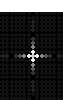
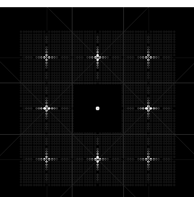
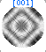

Desktop
Manual
Desktop
Manual
Windows Objects
Desktop Object:Window Object;
The Window Object is never directly accessible to the user. It adds support
for graph windows, scrolling, re-sizing, the ruler and the ruler buttons
at the top of the window of the Desktop Microscopist Object.
Stereographic Projection:Object;
The stereographic projection object plots a stereographic projection in
an expandable, scrollable, fully Macintosh compatible window. It supports
stereograms of all four primary crystals for both direction and plane pole
stereograms. This object supports zooming, an additional seven types of
rotation (to vertical, to horizontal, to center, about center,  about the x-axis, about the y-axis, and about a selected pole axis), spot addition by both index and angular
methods. In addition, Stereographic projections can be oriented using either
the Stage Object or the Beam Orientation object. Defect analysis is available
through a special dialog box which allows specific orientation of the stereogram
to align the projection in congruence with an experimental micrograph. It
allows irrational plane and direction determination from cursor positions,
habit plane selection and the ability to selectively rotate specific poles.
In addition, plots of small and great circles are easily added. A plane
stereogram with spot size and grey scale intensity based on the relative
strength of the calculated structure factor for the strongest pole coincident
at that location may be generated. Other features include labelling of spots,
generation of spots by symmetry operation and the display of all poles, forward and reverse projected.
about the x-axis, about the y-axis, and about a selected pole axis), spot addition by both index and angular
methods. In addition, Stereographic projections can be oriented using either
the Stage Object or the Beam Orientation object. Defect analysis is available
through a special dialog box which allows specific orientation of the stereogram
to align the projection in congruence with an experimental micrograph. It
allows irrational plane and direction determination from cursor positions,
habit plane selection and the ability to selectively rotate specific poles.
In addition, plots of small and great circles are easily added. A plane
stereogram with spot size and grey scale intensity based on the relative
strength of the calculated structure factor for the strongest pole coincident
at that location may be generated. Other features include labelling of spots,
generation of spots by symmetry operation and the display of all poles, forward and reverse projected.
New with version 2.0 , it is possible to input experimental
crystal orientations to calculate pole figures, or to determine crystal
orientations between two selected experimental orientations. Inputting of
the experimental crystal orientations can be either manually or by using
the SAD and related objects to set an experimental pole.
Kikuchi Map:Object
A derivative of the Stereogram Object, the Kikuchi Map plots an approximation
to an actual Kikuchi Map. Kikuchi lines are calculated and plotted based
on the relative intensity of their structure factors. Grey scale representation
of intensity is an option. The Kikuchi Map maintains most of the functionality
of the Stereographic Projection, however many of the analytical functions
have been eliminated. It should be noted that the plot time for a Kikuchi
Map may be significant. Kikuchi band width is calculated on the basis of
d-spacings. Finally, the Kikuchi model is a stereographic projection
and not a goniometric projection. This point is important for any analytical
work but is unimportant for the current K-maps intended purpose. K-lines
can be labeled and the major zone axis locations are designated by direction
poles.
Kossel Map:Object
The Kossel Map object is similar to the Kikuchi pattern object and has essentially
the same functionality. However, the Kossel and the BEKP objects use the
correct geometry for for the plotting of Kossel lines. As a result, the
camera length / camera constant determine the spacing of the Kossel lines.
The lines that are generated are true conic sections projected onto a plane
located one camera length away from the origin. The zone axes are set using
a gnomonic projection. Use the beam definition dialog box to set the camera
length.
Note: The Zoom function has the effect of changing the camera constant...use
it with care.
SAD:Object
The SAD Object adds a great deal of functionality to the program. The SAD
object supports PICT files, allows search and match for crystal structures
based on d-space, g-vector, volume and chemistry. It will plot a diffraction
pattern for a specific set of crystal orientation relationships. Diffraction
pattern calculations are based on crystal thickness, foil normal, and beam
parameters. It allows the experimental determination of d-spacings, zone
axis, angle between points on a micrograph, reduced cell volumes, and experimental
periodicities. In addition to setting camera length, magnification may also
be set. Diffraction patterns can be labeled, diffraction points can be queried
with respect to d-space, structure factor and extinction distance. Double
diffraction may be simulated. Diffraction spots are plotted based on relative
intensity and can be plotted proportional to size and with respect to a
256 grey scale. Addition of spots may be by additive or by free techniques.
Spots may be moved freely and may be subtracted from the pattern.
With version 2.0, there are added tools which allow
the determination of a two dimensional diffraction grid from an experimental
pattern. This experimental grid can be tablulated and displayed as a. table.
Using the Stage
Object to set the beam orientation and collection of two or more experimental
diffraction gratings it is now possible to calcluate
the probable primitive cell lattice for any unknown crystal. SAD
Object Dialog Box.
Streaking effects caused by precipitate shapes can now be calculated using
Desktop Microscopist. This feature is based on the fourier transform of
the crystal shape.

Streaking caused by the Crystal Shape of the precipitate.
It is now possible to determine the position and relative intensities
of kikuchi lines in the SAD pattern.

Full simulation of a simple cubic lattice with
cuboidal precipitate oriented with the matrix.
CBED:Object
The CBED object is the SAD Object except the diffraction spots are plotted
with respect to a 256 grey scale and the size of the diffraction spot is
determined by the convergence angle of the beam and the additional capability
to calculate full dynamic Bloch
Method intensity calculations.

A CBED Bloch Simulation
HOLZ Lines:Object
The HOLZ object will plot higher order Laue zone lines in the central disk.
It allows incremental distortion of the unit cell and immediate movement
of the HOLZ lines. The HOLZ lines may be labeled individually and relative
intensity may be represented by grey scale. This is a kinematic approximation.
The ability to plot the HOLZ pattern with curved lines is provided, two
different methods for approximating HOLZ line position are utilized. HOLZ
plots are calculated for one crystal at a time. HOLZ
Definition Dialog Box.
Laue:Back Reflection:Object
The Laue Back Reflection Object simulates the single crystal diffraction
pattern obtained by back reflection x-ray techniques. It assumes a monotonically
decreasing intensity as a function of maximum energy with a spike at the
characteristic x-ray peak. An experimental Laue Diffraction Pattern is a
complex function of the accelerating voltage, the target material and the
target specimen interaction. (The current Laue Back reflection object is
a reasonable first approximation but should be handled with care.)
Laue:Transmission:Object
This object simulates the Laue Transmission Diffraction Pattern. It is essentially
the same object as the Laue Back Reflection except the diffraction geometry
has been corrected to approximate the forward scattering phenomena.
Diffractometer
This is the first object to plot information using a standard polycrystalline
technique. The Diffractometer will plot a graph of intensity vs 2q for each
crystal. Calculations of intensity are based on a consideration of multiple
or weighted scattering from each pole and the use of a standard Lorentz-polarization
factor as given in Cullity. 2q and d-spacing values can be read directly
from the plot; labeling of individual peaks is supported. The calculated
diffractometer pattern is plotted in a graph object, which allows importing
of tab delimited ascii intensity plots. In addition, it supports some spectra
mathematics. Finally, the first attempts at a full simulation of a diffractometer
plot has been incorporated into the program. This simulation broadens the
peaks based on instrumental parameters (slot size and step size) and the
effect of average crystal size.
Definition Dialog Box.
Ring Patterns;
The electron ring pattern program calculates a ring pattern for a specific
crystal or set of crystals. This program is used primarily to compare diffraction
patterns taken from a poly-crystalline sample which approximates a large
distribution of oriented crystals. Rings may be individually labeled and
intensities represented in grey scale fashion. Rings can either be fully
or partially plotted. Definition
Dialog Box.
Debye-Scherrer
This object is exactly the same as the Ring Pattern object but the default
setting is for the defined x-ray beam. Definition
Dialog Box.
One Dislocation Imaging
This object allows the user to simulate images of single dislocations. It
is based on a generalized, multi-slice, dynamic calculation using a two
beam approximation and the concept of diffraction contrast. The mathematics
are fully described in the monograph Computed
Electron Micrographs and Defect Identification. Major changes from this
monograph include the extension to a generalized crystal system and the
incorporation of more physically intuitive methods for setting the imaging
conditions.
Two Dislocation Imaging
This object allows the user to simulate images of two dislocations and three
stacking faults. It is based on a generalized, multi-slice, dynamic calculation
using a two beam approximation and diffraction contrast.
Real Lattice
The Real Lattice object will plot a graphical representation of the real
lattice. It supports individual crystals only. Plotting options include
a unit cell, a unit lattice, a 2x2x2 lattice, a 4x4x4 lattice or a crystal
shape representation. Atoms may be plotted with covalent, metallic, Van
der Waals or ionic radii. Elements are plotted by color in color mode or
by pattern if in the monochrome mode. Individual atoms may be labeled for
quick identification. Atom color may be set, as well as background color.
Individual atoms, atoms of a particular element, or a plane of interest
may be hidden. Desktop Microscopist supports rendering of the atoms to enhance
three dimensional perception. It is possible to determine three atom planes,
two atom directions, distance between atoms and angles between atoms. Highlighting
of nearest neighbors and next nearest neighbors is supported. Rotation of
the crystal lattice is supported by x-axis, y-axis, z-axis, by free rotation
and to specific plane or direction.
Monte Carlo Modeling
This object allows the user to simulate particle interaction with the sample.
It is based on the relatively standard single scattering methodology. Average
density, and average atomic weight are set using the defined unit cells
and the relative proportions as determined in the orientation dialog box.
A broad range of distribution graphs are supplied: Projected Range, Path
lenght, As a function of depth or radial distribution: Excitions, Electron
Energy Loss, Nuclear Energy Loss, Total Nuclear Damage, and as a function
of energy, the Backscatter and forward scattered energy distributions.Defintion
Dialog Box
Tabulated information include: Incident Z,Incident M,Target Z,Target M.Density,
Thick. (nm), Inc. Ion Energy, Cutoff Energy, Initial Position, Initial Angle,
Channel Width, Reduced Energy, # Back Scattered, # Emitted, Avg Proj Range,
Avg Path Length.
Phase Diagram:Object
The phase diagram is Desktop Microscopist's only support of a non-crystallographic
object. It was designed to give on-line reference to standard phase diagrams.
It plots a binary phase diagram of composition versus temperature. The phase
diagram is stored as a set of Bezier Curves which approximate the experimentally
determined phase diagram. Composition and temperature may be read directly
from cursors. In addition, composition is given in both atomic and weight
percentages. The phase diagram recognizes phase boundaries and will calculate
relative proportions of individual phases using the Lever rule. The current
set of phase diagrams is limited but will be expanded with future upgrades.
With version 2.0 a Phase Diagram editor has been released. This allows the
individual researcher to store binary phase diagrams of interest to him.
Image Acquisition:
The Image Acquisition Object supports the real time importation of an image
from a CCD camera by an 8-bit Quick Capture or compatible image acquisition
board. This object helps to quickly acquire a set of diffraction patterns
which may then be transported to the SAD or relevant derived object for
analysis and identification. This object supports some simplistic binary
operations and will allow false coloration by intensity value. It is only
available when a Quick Capture or compatible card is inserted.
This completes the summary of the Desktop Microscopist Objects which are
available to users of Desktop Microscopist. Please refer to Chapter IV on
Menus and Chapter V on Dialog Boxes for a complete description of specific
functions.
Author:James T. Stanley J.
Stanley
Desktop
Manual
Distributed By: Virtual
Labs
Last Updated:1/12/96 Sat, Apr 27, 1996